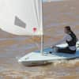

Hello, my name is Maria Sol, and I enjoy sailing on the weekends. I applied for a bachelor's in Software Development. I have 3 sisters, 2 cats, and 1 dog. My favorite food is pizza. I'm studying English as a second language, and I would like to work doing web pages someday!.I have always been passionate about technology and how it shapes our world. My interest in web development began when I created my first simple website for a school project. I was fascinated by the process of turning ideas into a functional online presence,Since then, I have dedicated my time to learning more about HTML, CSS, and JavaScript, and I enjoy experimenting with new frameworks and tools.
In addition to my studies, I love spending time outdoors. Sailing is one of my favorite activities, as it allows me to connect with nature and enjoy the beauty of the water.